Soluciones en piedra natural para cada proyecto
Materiales cuidadosamente seleccionados para proyectos residenciales, comerciales e institucionales.
Con más de 35 años de experiencia, en Arcomex Canteras orfrecemos una amplia gama de recubrimientos en piedra natural, porcelanatos y piezas arquitectónicas a la medida.
Garantizamos un servicio confiable con envíos a todo México. Al ser materiales 100% naturales, cada pieza aporta variaciones únicas en tono y textura que resaltan la autenticidad de tu obra.
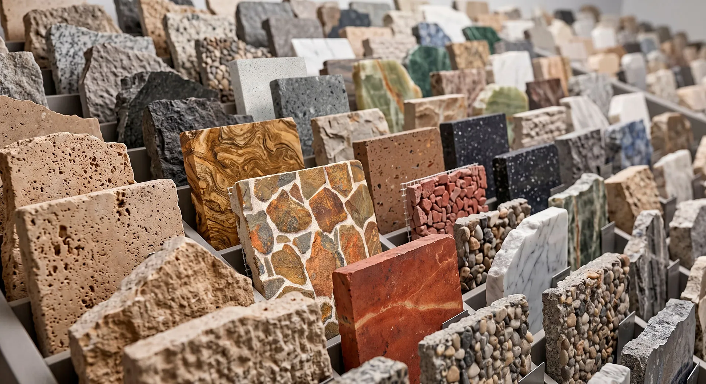

Materiales y recubrimientos para cada exigencia constructiva
Explora nuestro inventario completo de piedras naturales, porcelanatos y elementos arquitectónicos. Utiliza el buscador o selecciona una categoría para encontrar la solución exacta que tu obra requiere.
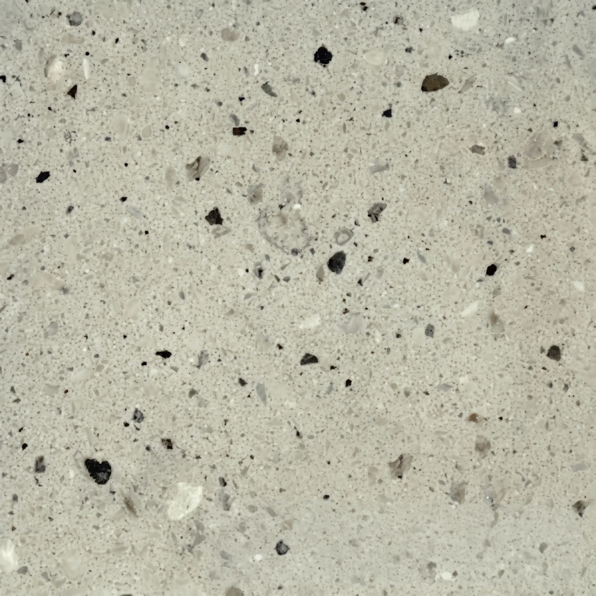
Cantera Blanca Mexicana
Aporta luz y un toque de diseño moderno a tu obra con este recubrimiento premium. Su matriz clara con contrastantes detalles minerales la convierte en el lienzo perfecto para la arquitectura contemporánea.
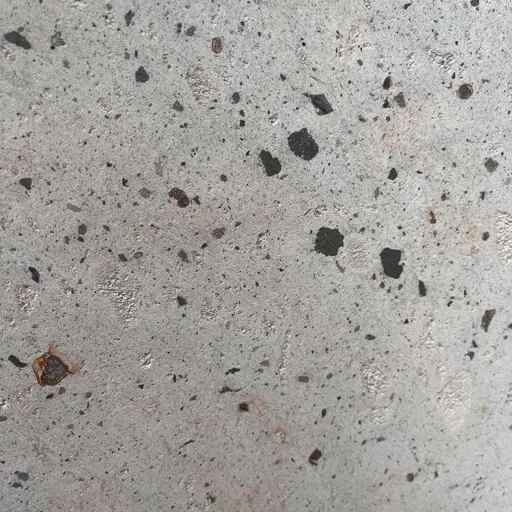
Cantera Blanca Esperanza
Identidad volcánica y encanto urbano. Una base ceniza luminosa salpicada por vibrantes incrustaciones minerales en tonos carbón y tierra. Con una estética cruda que evoca orgánicamente al terrazo arquitectónico, es el recubrimiento perfecto para dotar a fachadas y proyectos vanguardistas de un estilo industrial, audaz y profundamente auténtico.
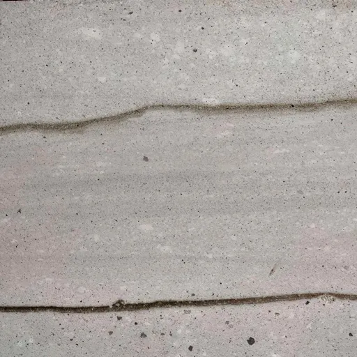
Cantera Blanca Pachuca
Estética cruda y carácter geológico. Un lienzo luminoso en tonos ceniza, atravesado por imponentes vetas oscuras que trazan el paso del tiempo. Su textura auténtica y líneas orgánicas la convierten en la elección perfecta para fachadas esculturales y muros de acento que buscan un minimalismo con fuerte personalidad natural.
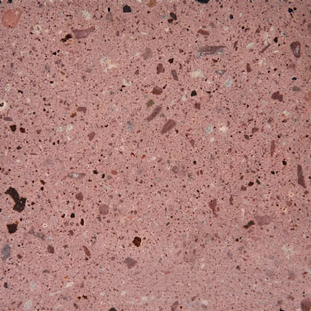
Cantera Rosa Azteca
Calidez y tradición para espacios con alma. Esta icónica piedra natural destaca por su vibrante fondo rosado, bellamente texturizado con incrustaciones minerales en tonos tierra, cuarzos claros y acentos oscuros. Es el recubrimiento por excelencia para aportar un estilo acogedor, clásico o colonial a cualquier fachada o muro.
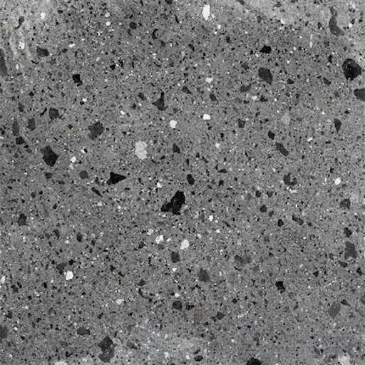
Cantera Negro América
Elegancia Volcánica en Negro Carbón. Un lienzo de gris profundo, casi antracita, se funde en una superficie densa y uniforme, donde destellos microscópicos de cristal brillan sutilmente como polvo de estrellas en una noche serena. Su textura táctil, de grano fino y compacto, proyecta una imagen de sofisticación moderna y una durabilidad imponente, perfecta para espacios que buscan la elegancia atemporal.
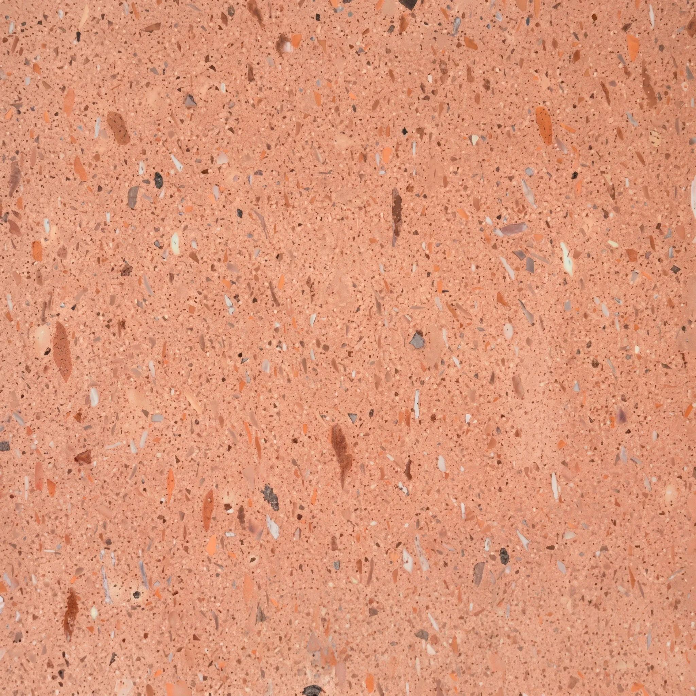
Cantera Naranja Mexicana
Energía y calidez vibrante para espacios con personalidad. Esta llamativa piedra natural destaca por su rica base terracota, bellamente contrastada con dinámicas incrustaciones minerales en tonos claros, oscuros y cobrizos. Su atractivo visual aporta un toque cálido y auténtico, perfecto para fachadas, patios o detalles arquitectónicos que buscan ser el centro de atención.
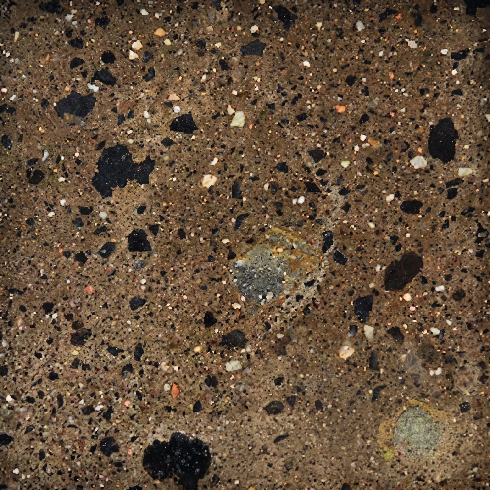
Cantera Café Galindo
Carácter terrenal y textura vibrante. Esta imponente piedra natural presenta una cálida base en tonos tierra, enriquecida por un contraste espectacular de incrustaciones minerales oscuras, destellos claros y marcados acentos orgánicos. Su innegable riqueza visual la convierte en la opción ideal para fachadas, muros exteriores y espacios que buscan transmitir fuerza, calidez y un arraigo total a la naturaleza.
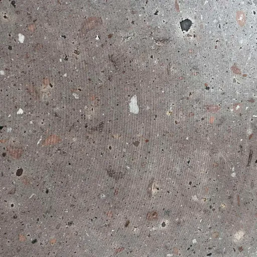
Cantera Café Maya
Calidez terrenal y herencia ancestral. Una base robusta en profundos tonos topo y café, enriquecida con vibrantes incrustaciones minerales en matices terracota, cuarzo y carbón. Su textura táctil evoca la fuerza pura de la naturaleza, convirtiéndola en la elección perfecta para infundir un carácter rústico-contemporáneo y una calidez inigualable en fachadas, terrazas y muros de acento.
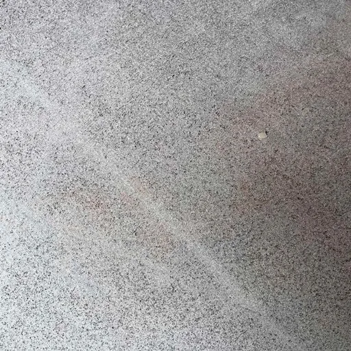
Recinto Xaltocan
Sobriedad volcánica y elegancia atemporal. Una piedra de origen volcánico en sofisticados tonos gris ceniza, caracterizada por su grano fino y uniforme. Su textura auténtica y acabado mate le otorgan un carácter arquitectónico puro, convirtiéndola en la elección perfecta para espacios contemporáneos que exigen máxima durabilidad y un minimalismo de alto nivel.
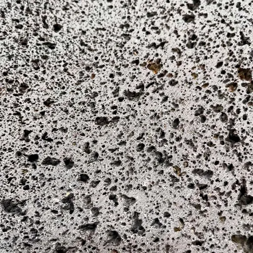
Recinto Poro Abierto / Renacimiento
Fuerza volcánica y textura en bruto. Una auténtica piedra natural en profundos tonos gris y grafito, caracterizada por su dramática porosidad abierta y orgánica. Su superficie cruda y marcadamente tridimensional inyecta un carácter táctil arrollador, siendo la elección definitiva para proyectos que exigen un brutalismo elegante, contrastes audaces y una conexión pura con la naturaleza.
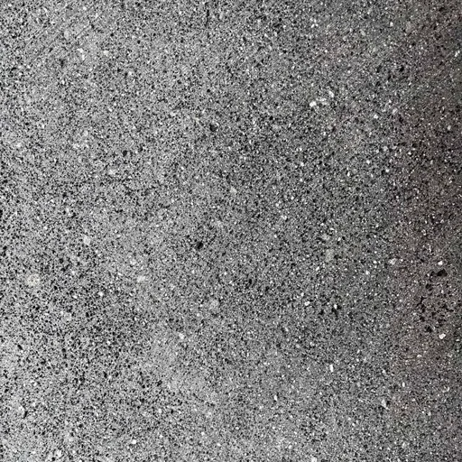
Recinto Poro Cerrado
Elegancia sobria con textura uniforme. Esta piedra natural ofrece la intensidad visual de la roca volcánica en tonos gris carbón profundo, pero con una superficie densa, de grano fino y porosidad mínima. Su acabado liso la hace perfecta para pisos, áreas de alto tráfico y recubrimientos modernos.
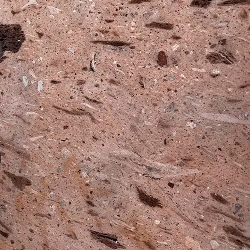
Cantera Piñón
Calidez terrosa y expresión orgánica. Una base envolvente en cálidos matices salmón y terracota, acentuada por imponentes incrustaciones minerales oscuras que evidencian su origen volcánico. Su textura táctil y vibrante inyecta una fuerza visual innegable, convirtiéndola en el recubrimiento ideal para dotar a fachadas y muros de un estilo rústico contemporáneo y profundamente acogedor.
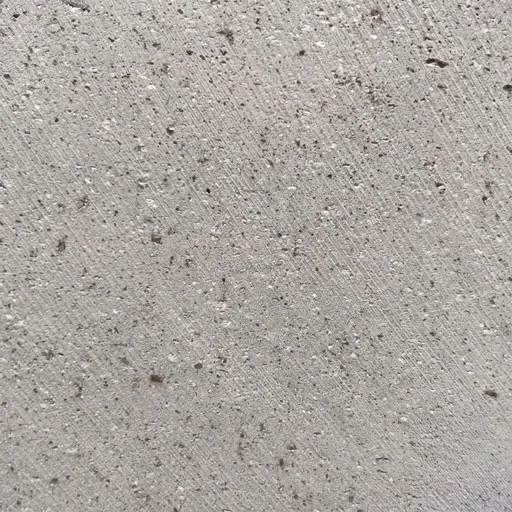
Cantera Gris QRO
El nuevo neutro para la arquitectura contemporánea. Esta piedra natural destaca por su versátil base gris y un distintivo acabado con sutiles líneas diagonales que aportan una textura direccional única. Perfecta para lograr un estilo moderno, minimalista o industrial.
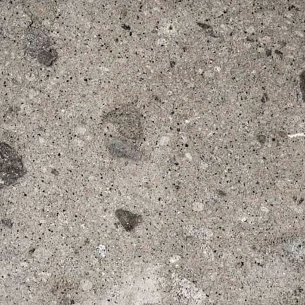
Cantera Gris Remedios
Serenidad neutra y dinamismo sutil. Una elegante superficie en tonos gris cálido, surcada por delicadas líneas diagonales que le otorgan un movimiento orgánico y fluido. Salpicada con discretas incrustaciones minerales, esta piedra de textura fina es la elección ideal para crear ambientes sofisticados, equilibrados y con una estética arquitectónica altamente versátil y contemporánea.
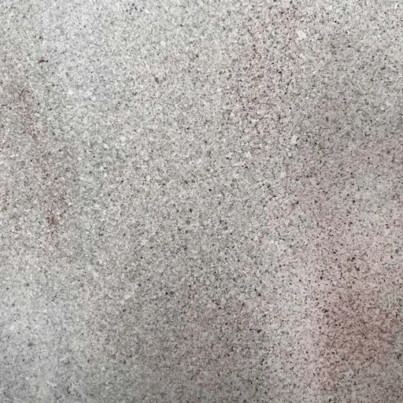
Cantera Blanca Luxor
Energía y calidez vibrante para espacios con personalidad. Esta llamativa piedra natural destaca por su rica base terracota, bellamente contrastada con dinámicas incrustaciones minerales en tonos claros, oscuros y cobrizos. Su atractivo visual aporta un toque cálido y auténtico, perfecto para fachadas, patios o detalles arquitectónicos que buscan ser el centro de atención.
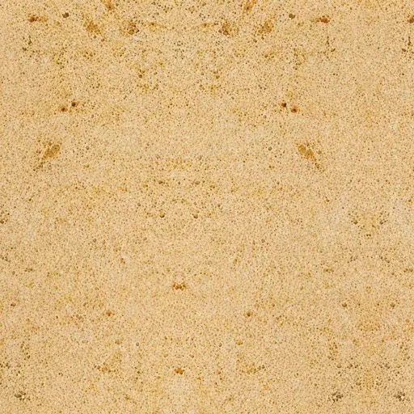
Cantera Calmeca
Calidez dorada y textura orgánica. Una superficie radiante en tonos arena y ámbar, definida por una porosidad profunda y auténtica que evoca la riqueza pura de la tierra. Su acabado tridimensional y rusticidad natural la convierten en la opción estelar para inyectar luz, calidez y un carácter táctil inigualable en proyectos arquitectónicos, muros y fachadas.
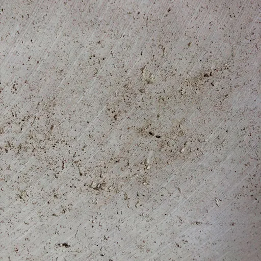
Cantera Rivera Beige
Calidez orgánica y textura sofisticada. Esta hermosa piedra natural cautiva con sus suaves tonos arena y una superficie enriquecida por delicadas porosidades y un elegante acabado direccional. Su equilibrio perfecto entre lo rústico y lo refinado la convierte en el recubrimiento ideal para aportar luz y un ambiente acogedor.
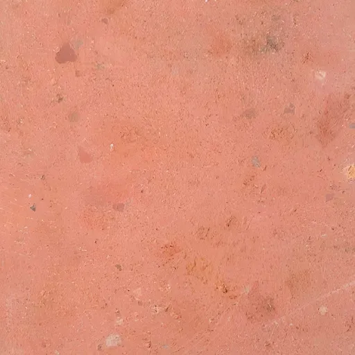
Cantera Roja Tagui
Calidez terrenal y carácter vibrante. Un lienzo envolvente en profundos tonos terracota y rojo arcilla, sutilmente salpicado por auténticas incrustaciones minerales. Esta piedra de intensidad innegable es la protagonista ideal para inyectar fuerza, herencia y una estética arquitectónica audaz en fachadas, patios y muros de acento.

Cantera Bronce
Energía terrenal y textura profunda. Un vibrante mosaico natural que fusiona intensos tonos ocre, cobre y tierra, realzado por llamativas incrustaciones minerales oscuras. Su extraordinaria riqueza cromática y rusticidad táctil la convierten en la pieza perfecta para inyectar calidez absoluta, carácter y una fuerza arquitectónica imponente en fachadas y muros de acento.
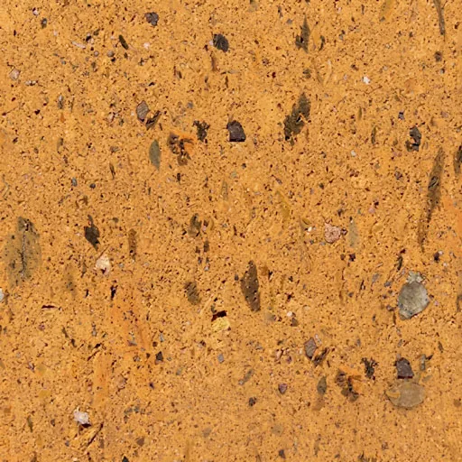
Cantera Mostaza
Energía vibrante y contraste audaz. Una base enérgica en radiantes tonos ocre, acentuada por dramáticas incrustaciones minerales oscuras. Su profunda porosidad y extraordinaria calidez visual la convierten en el recubrimiento estelar para inyectar luz, vitalidad y un acento inconfundible en cualquier proyecto arquitectónico.
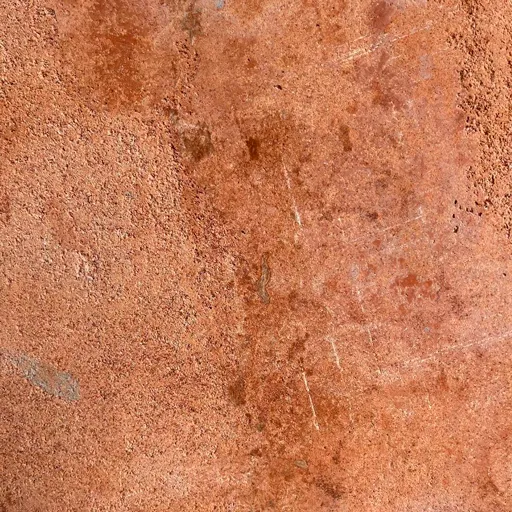
Cantera Tikul
Calidez ancestral y rusticidad auténtica. Un lienzo magnético en profundos tonos terracota y rojo arcilla, definido por una textura rica, porosa y de carácter orgánico. Esta piedra evoca la herencia arquitectónica de las haciendas tradicionales, siendo el recubrimiento estelar para infundir una calidez vibrante y un encanto rústico inigualable en patios, fachadas y espacios de espíritu acogedor.
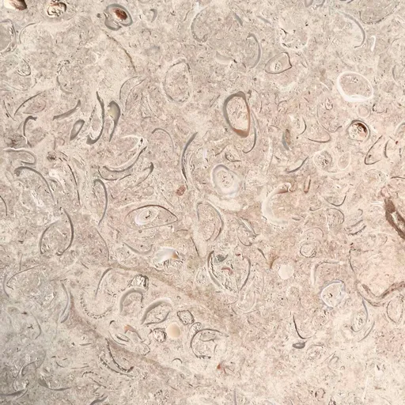
Cantera Conchuela
Un lienzo natural que fusiona la calidez del beige con la historia del océano. Con tonos beige claro y textura táctil, definida por abundantes y auténticas incrustaciones de conchas fósiles antiguas y restos marinos. Esta textura orgánica y sofisticada ofrece un patrón irrepetible en cada pieza, garantizando exclusividad y un toque natural terrenal para fachadas o interiores de acento. Un material singular que cuenta una historia de millones de años.
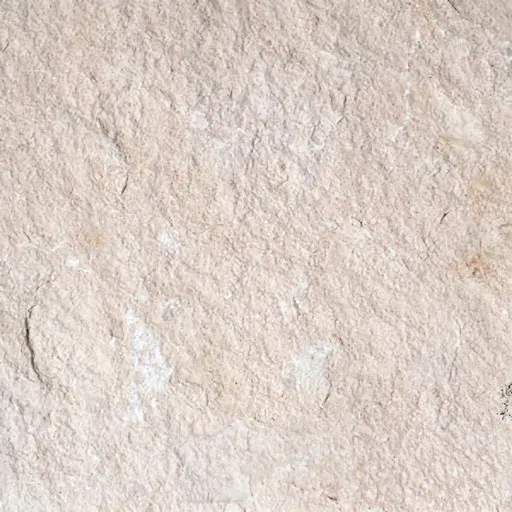
Cantera Rústica Blanca Galarza
Luminosidad orgánica y textura auténtica. Esta hermosa piedra natural destaca por su paleta en tonos marfil y crudo, ofreciendo un relieve rústico que captura luces y sombras de manera espectacular. Su superficie viva y porosa aporta una frescura imponente, siendo la opción perfecta para iluminar fachadas, terrazas y muros de acento.

Cantera Rústica Arqueológica
Carácter ancestral y fuerza terrenal. Esta imponente piedra natural exhibe una textura viva y granulosa, donde se entrelazan profundos tonos terracota, arena y ceniza rocosa. Su genuino acabado rústico aporta un peso visual inigualable y una riqueza táctil que transforma por completo fachadas, muros de acento y proyectos paisajísticos.
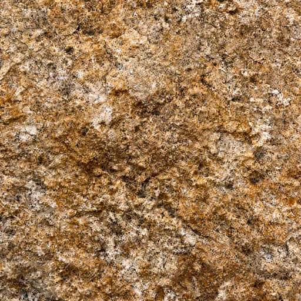
Cantera Rústica Rivera Dorada
Calidez vibrante y relieve indomable. Esta imponente cantera natural cautiva con su dramático contraste: una base pétrea en tonos ceniza iluminada por oxidaciones en color ocre, bronce y oro viejo. Su textura tridimensional aporta un carácter salvaje y auténtico, ideal para convertir fachadas, muros exteriores y áreas de fuego en los protagonistas absolutos del espacio.

Cantera Rústica Rojo Tlayua
Intensidad terrenal y carácter absoluto. Esta vibrante cantera natural se distingue por su profunda base en cálidos tonos terracota y arcilla, dramáticamente atravesada por vetas orgánicas en color arena. Su superficie rústica y porosa irradia una energía imponente, convirtiéndola en la pieza maestra para dar vida y protagonismo a fachadas, muros de acento y espacios exteriores.

Piedra Madera de la India
Calidez orgánica con sofisticación global. Esta piedra exótica cautiva a la vista con sus marcadas vetas lineales en tonos arena, ocre y terracota, emulando la nobleza y el flujo natural de un tronco de madera. Su estética visualmente suave, respaldada por la solidez inquebrantable de la roca, la convierte en la opción ideal para fachadas de lujo o muros interiores que buscan un toque de elegancia traído desde la India.
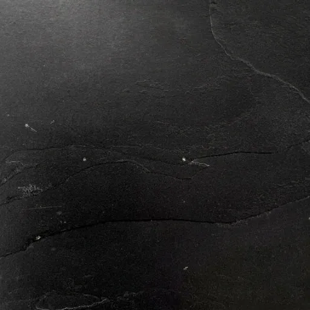
Piedra Slate Negra de la India
Elegancia profunda y sofisticación global. Importada directamente desde la India, esta majestuosa pizarra natural cautiva por su tono negro intenso y una textura estratificada que aporta un relieve táctil inigualable. Su acabado mate y sobrio atrapa la luz para revelar sutiles fisuras orgánicas, creando contrastes dramáticos en cualquier espacio. Es la elección definitiva para fachadas contemporáneas y muros de acento de lujo.

Piedrín de Madera de la India
Textura tridimensional y calidez exótica. Este fascinante recubrimiento captura la nobleza visual de la madera fundida en la inquebrantable solidez de la piedra natural importada. Su formato apilado en alto relieve crea un dramático juego de luces y sombras, resaltando sus marcadas vetas horizontales en vibrantes tonos arena, ocre y caramelo. Es la pieza arquitectónica definitiva para revestir muros interiores, fachadas o áreas de acento.

Piedrín Negro Zacatecas
Carácter puro y sofisticación tridimensional. Este imponente recubrimiento lineal destaca por su profunda tonalidad carbón y una textura rústica de alto relieve que captura la luz de forma espectacular. Su formato apilado crea un dramático juego de sombras que aporta volumen y un toque vanguardista a cualquier espacio. Es la elección perfecta para revestir fachadas, chimeneas y muros de acento.

Piedrín Arqueológico
Contraste milenario y textura vibrante. Este cautivador recubrimiento lineal entrelaza bloques de piedra natural en profundos tonos carbón y tierra con luminosos acentos en ocre dorado de textura granítica. El corte natural y escalonado del material multiplica los contrastes, dotando a la superficie de un volumen robusto y elegante. Una obra de arte geológica, ideal para fachadas y muros de acento que buscan calidez, carácter orgánico y una riqueza táctil absoluta.

Piedrín Blanco del Desierto / Galarza
Luminosidad orgánica y relieve elegante. Este recubrimiento lineal ilumina los espacios con su suave paleta en tonos marfil, crema y arena clara. Su ensamblaje en diferentes grosores rompe la monotonía del muro, inyectando un dinamismo táctil y volumetrías muy marcadas. Es la elección impecable para revestir fachadas modernas, muros de acento y áreas interiores, brindando una sensación de amplitud, frescura y sofisticación.

Piedrín Travertino Beige
Elegancia clásica y volumen orgánico. Este recubrimiento lineal exalta la belleza atemporal del travertino con su inconfundible porosidad y serenos tonos arena. La disposición asimétrica de sus piezas proyecta un cautivador juego de luces y sombras, aportando una profundidad visual extraordinaria. La elección ideal para inyectar lujo cálido y refinado a fachadas e interiores.

Piedrín Travertino Rojo
Intensidad terrenal y calidez vibrante. Este imponente recubrimiento lineal fusiona la porosidad natural del travertino con una dramática paleta en tonos terracota, ocre y ámbar oscuro. Su diseño fraccionado y volumétrico rompe con las superficies lisas, ofreciendo una experiencia visual envolvente y altamente texturizada. La elección perfecta para dotar a fachadas e interiores de un carácter fuerte, rústico y sumamente acogedor.

Piedrín Recinto
Herencia volcánica, elegancia atemporal. Una impecable composición geométrica en profundos tonos carbón y ceniza oscura. Forjada con auténtica herencia volcánica, la textura rugosa y porosa de cada bloque atrapa la luz para crear un fascinante juego de sombras y relieve tridimensional. Es el recubrimiento definitivo para elevar muros y fachadas con una elegancia sobria, un minimalismo arquitectónico y un carácter absolutamente atemporal.

Piedrín Dorado Tepeji
Destellos cálidos y volumen vibrante. Este cautivador recubrimiento lineal ilumina los espacios con su base arena natural y espectaculares oxidaciones doradas y cobrizas. La superposición de sus cortes lineales genera una geometría tridimensional que transforma espacios planos en superficies con movimiento. La elección ideal para revestir fachadas e interiores que exigen luz, textura y un carácter inconfundible.

Piedrín Rosa Jaspe
Contraste cristalino y dramatismo orgánico. Este recubrimiento lineal fusiona una base luminosa en tonos blanco y gris cuarzo con profundas e intensas vetas en rosa carmesí. Gracias a su perfil irregular, la luz esculpe cada fragmento del material, revelando una textura rica y llena de carácter arquitectónico. Es la pieza indiscutible para dotar a muros de acento, interiores exclusivos y fachadas de una estética exótica, sofisticada y visualmente irrepetible.

Piedrín Santo Tomás
Fuerza mineral y elegancia oscura. Este recubrimiento lineal domina el espacio con su profunda paleta en tonos grafito y gris carbón, salpicada por ligeras vetas blancas y sutiles oxidaciones cobrizas. La variación de profundidades en su montaje aporta una riqueza estética innegable, haciendo que la propia sombra actúe como un elemento más del diseño. Es la elección definitiva para dotar de vanguardia, carácter y un lujo absoluto a fachadas modernas y muros de acento.

Piedrín Rojo Tlayua
Energía terrenal y calidez vibrante. Este recubrimiento lineal destaca por su rica paleta de tonos terracota, arcilla y sutiles acentos cobrizos. Al presentarse en listones de espesores variables, crea una fachada viva que cambia de aspecto sutilmente según la iluminación del entorno. Una elección audaz y sofisticada, perfecta para convertir fachadas y espacios interiores en el punto focal del proyecto.

Piedrín Arcoíris
Espectáculo geológico y dinamismo cromático. En este recubrimiento lineal cada pieza exhibe ondas fluidas que transicionan entre grises plomizos, ocres vibrantes, rojos arcilla y arenas cálidas. El acabado en alto relieve de cada pieza se integra armónicamente para construir paramentos con una presencia inquebrantable y dimensional. La elección audaz para inyectar vitalidad, movimiento y un carácter único a fachadas y espacios interiores de autor.

Piedrín Verde Militar
El instinto salvaje del diseño industrial. Una fusión audaz de tonos gris-verde profundos y vibrantes acentos cobrizos oxidados. Este revestimiento de piedra natural, con su textura rugosa y relieve tridimensional, aporta una sofisticación orgánica y un carácter inigualable a cualquier espacio. Es la elección perfecta para quienes buscan un equilibrio entre la robustez industrial y la calidez de la naturaleza.

Piedrín Xaltocan
La máxima expresión de la elegancia purista. Un ensamblaje lineal armónico en serenos tonos gris ceniza. Su fina textura y las sutiles variaciones naturales entre cada bloque tejen una superficie de elegancia purista. Una pieza de geometría impecable, ideal para dotar a muros y espacios contemporáneos de luz, sofisticación y un minimalismo arquitectónico absoluto.

Piedrín Negro Vego
Elegancia audaz labrada en piedra. Una imponente composición en tonos carbón y negro profundo, donde cada bloque de relieve agreste cobra vida al ser atravesado por espectaculares vetas blancas cristalinas. Su textura marcadamente tridimensional crea un cautivador juego de luces y sombras, convirtiéndolo en el recubrimiento estelar para dotar a fachadas y muros de acento con una fuerza arquitectónica audaz, contrastante y de absoluta sofisticación.

Piedrín Blanco Vego
Luminosidad que redefine tu espacio. Un luminoso ensamblaje natural donde la pureza del blanco y los sutiles matices plata se entrelazan con delicados destellos cálidos. Su textura agreste y marcadamente tridimensional captura la luz del entorno, creando un elegante y suave juego de sombras. Una composición geométrica impecable, ideal para inundar de amplitud, frescura y absoluta sofisticación contemporánea cualquier fachada o espacio interior.

Piedrín Negro Mixteco
Sobriedad profunda, calidez terrenal. Un cautivador mosaico lineal que entrelaza la profunda sobriedad del carbón con cálidos destellos en tonos arena, óxido y tierra natural. Su relieve rústico y formato tridimensional generan un exquisito juego de sombras, convirtiéndolo en el revestimiento ideal para transformar muros y fachadas en auténticas piezas de diseño contemporáneo que irradian tanto elegancia como calidez.

Piedrín Oro Viejo
La calidez del sol poniente tallada en relieve eterno. Un vibrante ensamblaje lineal de piedra natural que fusiona serenos tonos ocre, dorados radiantes y beiges arenosos. Su textura de alto relieve rústico crea un cautivador juego tridimensional de luces y sombras. Es la elección definitiva para inyectar lujo natural, una calidez envolvente y un carácter sofisticado y atemporal en fachadas o muros de acento contemporáneos.

Tapete Tronchado Dorado Tepeji
Calidez rústica en simetría perfecta. Este mosaico ensambla minuciosamente pequeños bloques de piedra, creando un tapiz táctil vibrante donde predominan tonos arena, ocre y sutiles destellos dorados. El relieve de cada fragmento contrasta a la perfección con la precisión geométrica de su formato en malla. Es el recurso definitivo para inyectar luz, ritmo y lujo a muros de acento, columnas y fachadas.
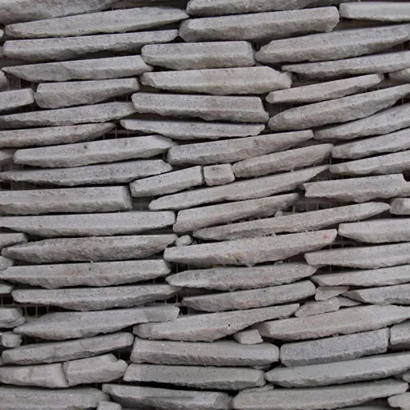
Tapete Pepita Blanco Vego
Luminosidad pura y volumen orgánico. Esta malla preensamblada reúne finas lajas de piedra en serenos tonos blancos y grises. Su ensamble artesanal tipo "pepita" superpone cortes irregulares que crean un profundo juego de luces y sombras. Una opción vanguardista para revestir muros de acento y fachadas, combinando una riqueza táctil inigualable con la eficiencia de instalación de su formato.
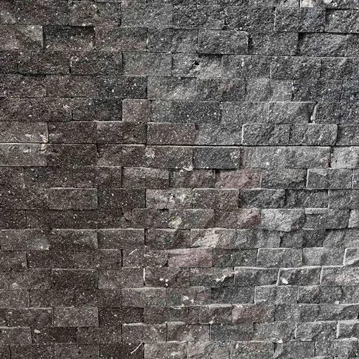
Tapete Tronchado Recinto
La crudeza volcánica convertida en arte geométrico y táctil. Una intrincada composición de pequeños bloques en tonos carbón y gris ceniza, donde la porosidad de la piedra cobra protagonismo. Su acabado de corte rústico atrapa la luz, creando un dramático juego de sombras. Es el recubrimiento definitivo para dotar a muros y fachadas de un minimalismo brutalista, y de sofisticación contemporánea.

Tapete Tronchado Arcoíris
Energía cromática y simetría vibrante. Este mosaico preensamblado combina diminutos bloques rústicos en cálidos tonos terracota, ocre y beige. Las exóticas vetas onduladas de cada fragmento contrastan a la perfección con su estricta cuadrícula geométrica. Una opción audaz para inyectar vitalidad y un relieve tridimensional a muros decorativos.
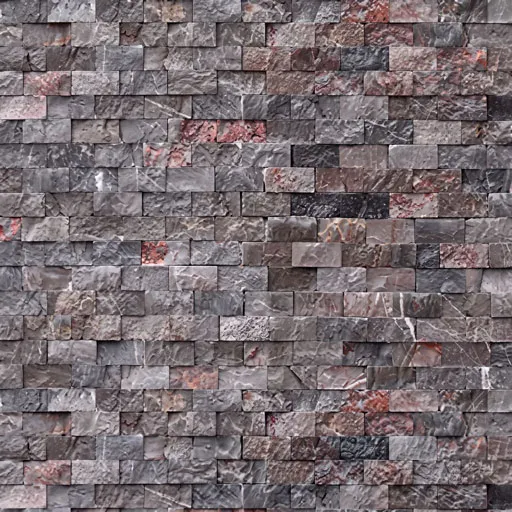
Tapete Tronchado Santo Tomás
Carácter mineral y contraste absoluto. Este mosaico preensamblado domina con su profunda base grafito, salpicada por dramáticas oxidaciones rojizas. Su relieve rústico tronchado multiplica la profundidad visual, contrastando a la perfección con su estricta geometría. La elección definitiva para dotar fachadas e interiores de un lujo oscuro y vanguardista.
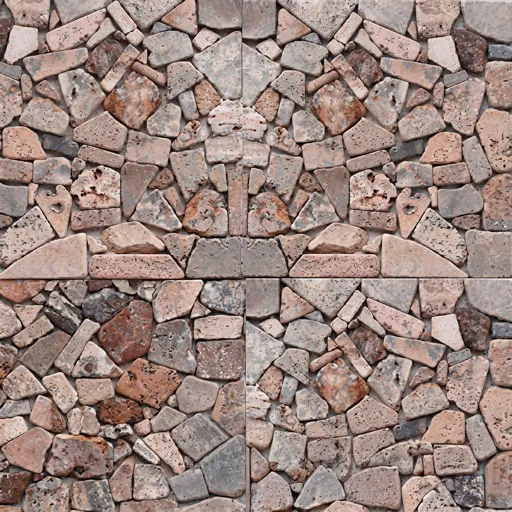
Tapete Tomboleado Travertino Rojo
Calidez orgánica y diseño hipnótico. Este mosaico preensamblado dibuja intrincados patrones geométricos con fragmentos de bordes redondeados. Su paleta terracota, arena y ceniza resalta la porosidad natural de la piedra, creando una superficie visualmente envolvente. Una pieza artesanal inigualable para transformar muros de acento.
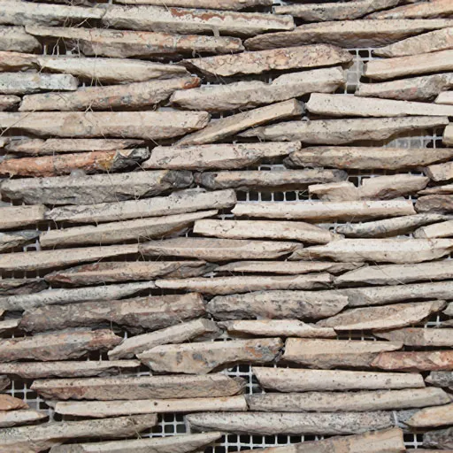
Tapete Pepita Travertino Rojo
Textura cruda y volumen dinámico. Este mosaico preensamblado agrupa finas y alargadas lajas de piedra en tonos arena, arcilla y sutiles toques terracota. Su ensamble artesanal tipo "pepita" genera profundas oquedades y un relieve asimétrico que esculpe dramáticos juegos de luz y sombra. La opción ideal para inyectar un carácter rústico, audaz y sumamente táctil a muros de acento.
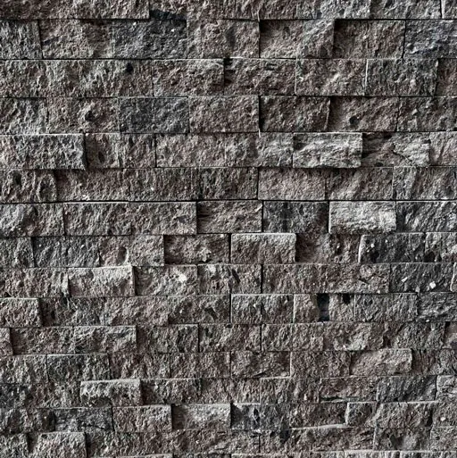
Tapete Tronchado Negro América
Un tapiz de fuerza volcánica tallado en relieve absoluto. Una superficie de negro profundo, definida por un acabado tronchado de textura agreste y desgarrada. Su relieve pronunciado genera un fascinante juego tridimensional de luces y sombras. Los sutiles destellos minerales emergen bajo iluminación, añadiendo sofisticación táctil. Es la elección perfecta para muros que exigen un carácter potente y exclusivo.
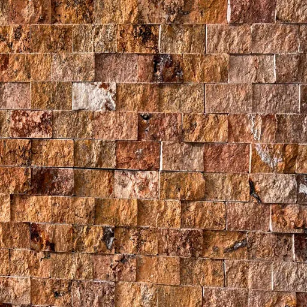
Tapete Tronchado Travertino Rojo
Piedra rústica en tonos terracota quemado con un relieve profundo. Este revestimiento premontado fusiona la fuerza de la piedra natural con una textura 'tronchada' irregular que captura la luz. Su vibrante paleta de rojos oxidados y ocres evoca la calidez de la tierra antigua. Ideal para paredes de acento que exigen carácter y una presencia orgánica incomparable.
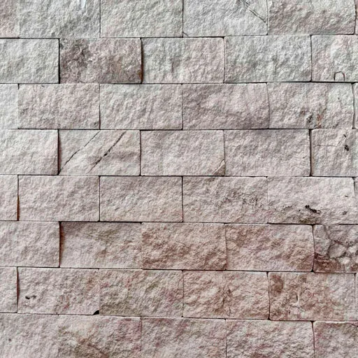
Tapete Tronchado Blanco Desierto
Calidez de las arenas milenarias, tallada en relieve puro. Un exquisito tapiz de piedra natural que entrelaza tonos arena, rosados pálidos y sutiles matices crudos. Su acabado rústico y fracturado captura la luz de manera magistral. Es el revestimiento definitivo para inundar de frescura, amplitud y sofisticación orgánica cualquier fachada o espacio interior que busque convertirse en un oasis de calma arquitectónica.

Laja Arqueológica
Contrastes profundos y encanto atemporal. Sus cortes irregulares en intensos tonos café tostado y bronce son enmarcados por juntas claras que acentúan una geometría orgánica y robusta. Su superficie evoca la solidez inquebrantable de la mampostería antigua. La elección perfecta para dotar a pisos, patios y fachadas de un carácter histórico y un impacto visual innegable.

Laja Blanco del Desierto / Galarza
Luminosidad absoluta y contraste audaz. Esta elegante piedra destaca por sus serenos tonos marfil y crema, enmarcados por profundas juntas oscuras que dibujan una fascinante red geométrica. Su textura sutil y cortes asimétricos rompen la monotonía del espacio. La opción ideal para crear pisos y revestimientos amplios con un impacto gráfico moderno, fresco y altamente sofisticado.
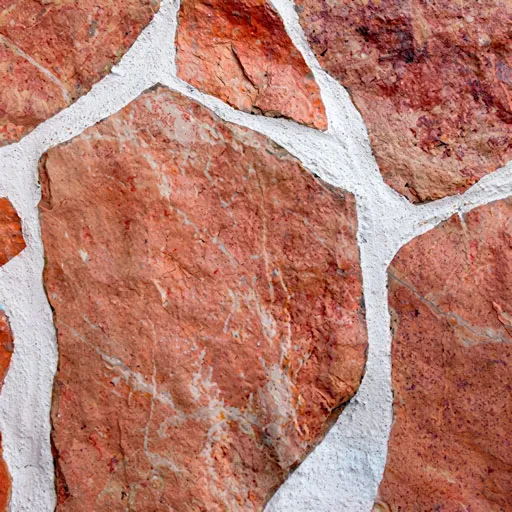
Laja Rojo Tlayua
Calidez vibrante y contraste excepcional. Sus cortes irregulares despliegan una intensa paleta de tonos terracota, arcilla y acentos cobrizos, enmarcados magistralmente por gruesas juntas en blanco puro. Esta marcada geometría rústica inyecta energía y un profundo carácter orgánico a cualquier superficie. El revestimiento perfecto para convertir patios, pisos y muros exteriores en los protagonistas indiscutibles del diseño.
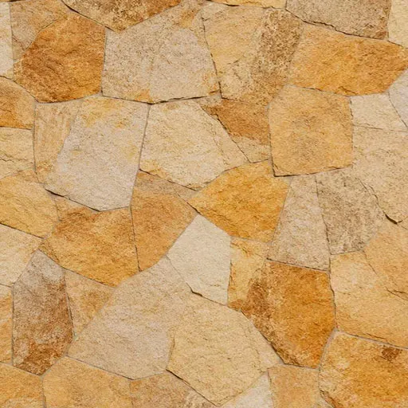
Laja Oro Viejo
El resplandor del sol eternizado en lienzos de piedra natural. Un rompecabezas orgánico que irradia vida a través de sus vibrantes destellos ocre, ámbar y arena. El formato irregular de cada losa y su textura rústica genuina se entrelazan para vestir muros y fachadas con una calidez envolvente. Es el recubrimiento maestro para quienes buscan transformar sus espacios con una luminosidad radiante y un encanto arquitectónico atemporal.
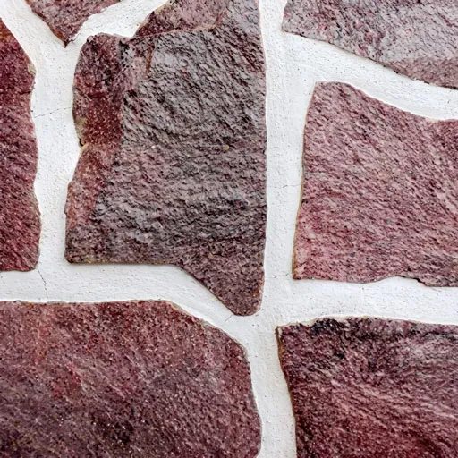
Laja Sangre de Pichón
Elegancia magnética y contraste dramático. Sus cortes asimétricos exhiben una rica paleta de profundos tonos borgoña, púrpura y granate. Su textura porosa y robusta cobra un protagonismo absoluto al estar enmarcada por gruesas juntas de un blanco inmaculado. Una elección audaz y llena de carácter, ideal para revestir fachadas y muros de acento con un impacto visual innegable.
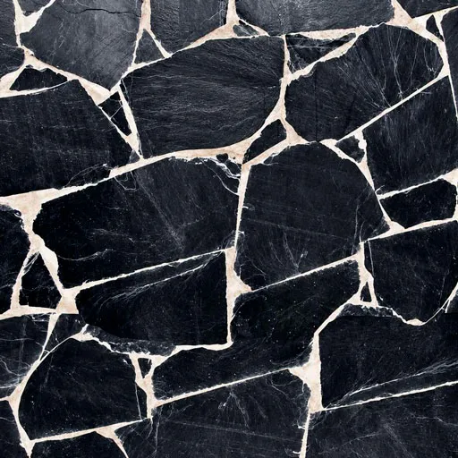
Laja Negro Zacatecas
El poder del contraste en fragmentos de oscuridad. Un rompecabezas orgánico de losas irregulares que impone con su profundo tono carbón. La superficie natural de cada pieza, surcada por líneas cristalinas, cobra dramatismo al enmarcarse visualmente, creando una red fascinante. Es el recubrimiento definitivo para inyectar un carácter audaz y de alta sofisticación arquitectónica en pavimentos o muros esculturales.
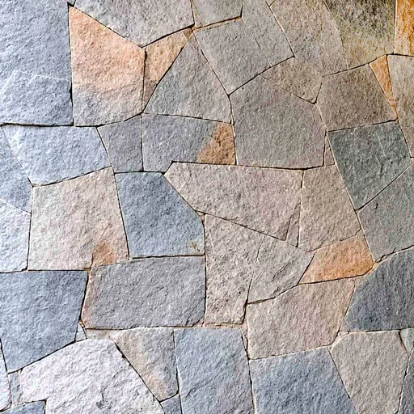
Laja San Andrés
Un lienzo orgánico donde el frío del acero abraza la calidez de la tierra. Este rompecabezas de piedra natural entrelaza losas irregulares en serenos tonos azul pizarra y gris escarcha, salpicados por destellos terracota y arena. Su textura genuinamente agreste compone una superficie dinámica, rítmica y llena de carácter. Es la elección maestra para revestir muros y fachadas con un contraste cromático y una sofisticación rústica inigualable.
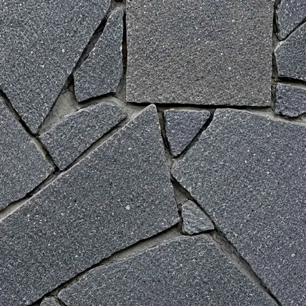
Laja de Recinto
La majestuosidad volcánica convertida en rompecabezas de piedra. Una composición de losas irregulares en profundos tonos carbón y ceniza oscura, donde cada pieza revela una textura porosa salpicada de sutiles destellos minerales. Este mosaico orgánico entrelaza formas caprichosas para crear una red visual fascinante, convirtiéndose en la elección definitiva para revestir muros y pavimentos con una elegancia rústica, sobriedad y una resistencia atemporal.
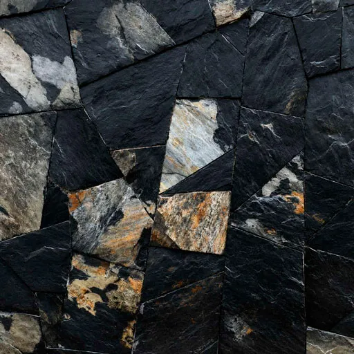
Laja Negro Mixteco
Un lienzo de oscuridad rasgado por el fuego de la tierra. Este rompecabezas orgánico fusiona la sobriedad absoluta del carbón con estallidos en tonos cobre, óxido y arena. Cada losa revela una textura agreste inigualable, creando una red visual vibrante y de alto contraste cromático. Es el revestimiento maestro para transformar fachadas y muros esculturales en obras de arte arquitectónico, equilibrando elegancia audaz con la fuerza más pura de la naturaleza.
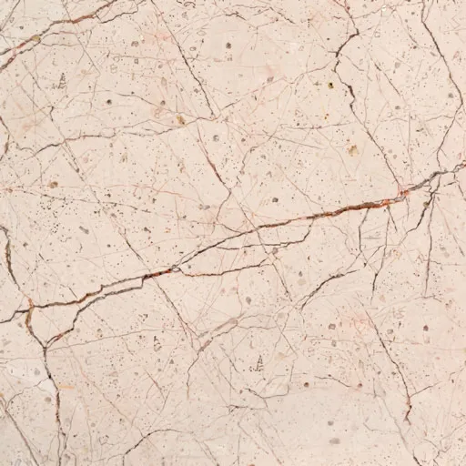
Mármol Beige Maya
Elegancia clásica y calidez atemporal para espacios sofisticados. Esta exquisita piedra natural cautiva con su suave fondo en tonos crema y arena, bellamente contrastado por un intrincado patrón de finas vetas oscuras y cobrizas que le otorgan un dinamismo visual irrepetible. Es la elección perfecta para revestir interiores residenciales o comerciales que buscan proyectar lujo y luminosidad.
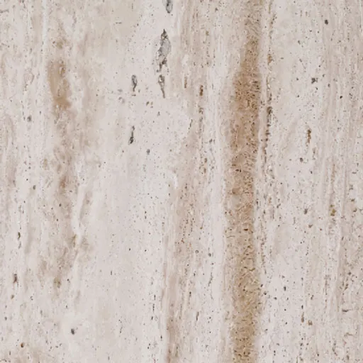
Mármol Travertino Veteado
Direccionalidad y fluidez que estilizan tus espacios. Esta sofisticada piedra natural se distingue por su hermoso corte a favor de la veta, revelando marcadas líneas continuas en tonos arena, crema y ocre. Este patrón lineal aporta una increíble sensación de altura y amplitud visual, haciéndolo ideal para muros, fachadas interiores y baños de alta gama.
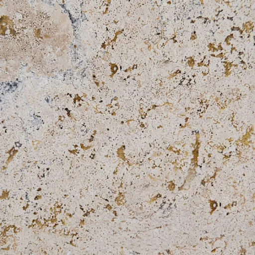
Mármol Travertino Fiorito
Riqueza orgánica y encanto clásico para tus espacios. Exhibe un hermoso patrón en forma de nubes, revelando una base crema entrelazada con características oquedades naturales en vibrantes tonos ocre, oro y tierra. Su textura dinámica aporta un carácter excepcionalmente cálido, ideal para interiores residenciales, baños y áreas de lujo que buscan un estilo atemporal.

Mármol Travertino Rojo
Fuerza y calidez terrenal para espacios audaces. Esta impactante piedra natural roba las miradas con su vibrante base en tonos terracota, enriquecida por sutiles incrustaciones minerales y delicados detalles orgánicos en tonos crema y ocre. Su rica textura visual es la opción perfecta para crear muros de acento, áreas de baño y ambientes que buscan proyectar carácter y sofisticación.
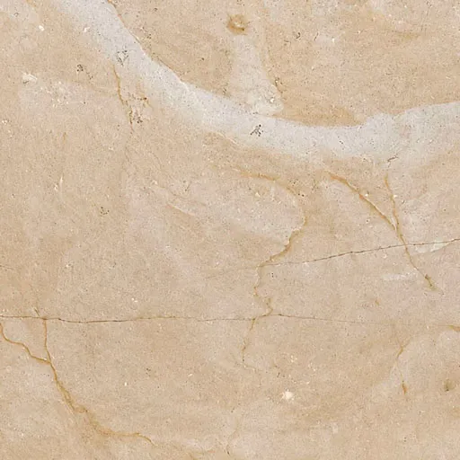
Mármol Dorado Tepeji
Luminosidad y calidez envolvente para tus espacios. Esta elegante piedra natural se distingue por su rica base en tonos dorados, miel y arena, bellamente matizada por sutiles texturas nubladas y detalles orgánicos claros. Su apariencia radiante es la elección perfecta para aportar luz y un ambiente acogedor a interiores, baños y proyectos residenciales de alta gama.
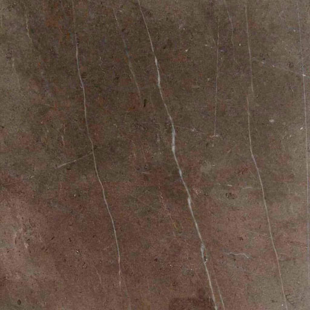
Mármol Santo Tomás
Un lienzo profundo de grises cálidos y matices terracota, sutilmente iluminado por finas vetas blancas que recorren la piedra con un ritmo orgánico. Esta pieza de sofisticación terrosa es la elección perfecta para quienes buscan dotar sus espacios de un lujo sobrio, calidez atemporal y una presencia visual imponente.
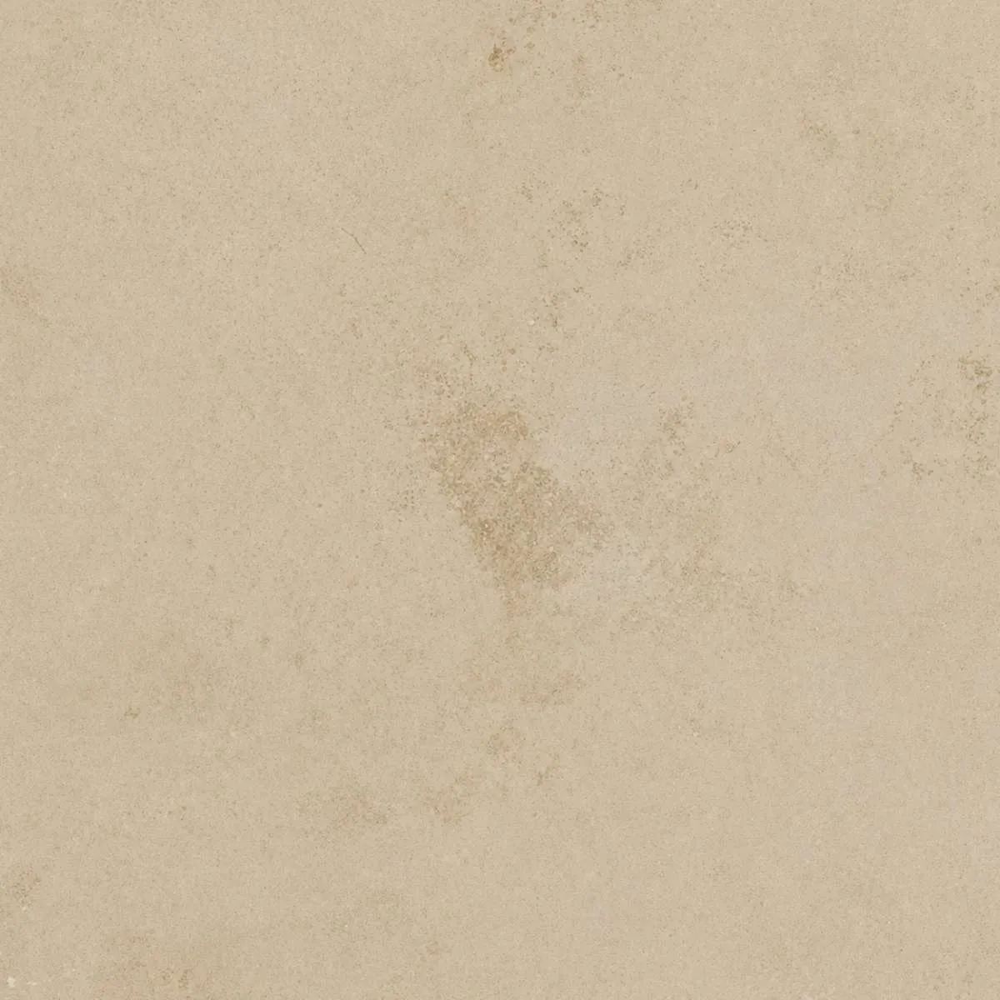
Mármol Xalapa
Una superficie serena en tonos arena y beige suave, enriquecida con delicadas texturas orgánicas que simulan la fina arena del desierto. Es el recubrimiento ideal para maximizar la luz natural, aportando una sensación de amplitud, pulcritud y elegancia contemporánea a cualquier espacio.
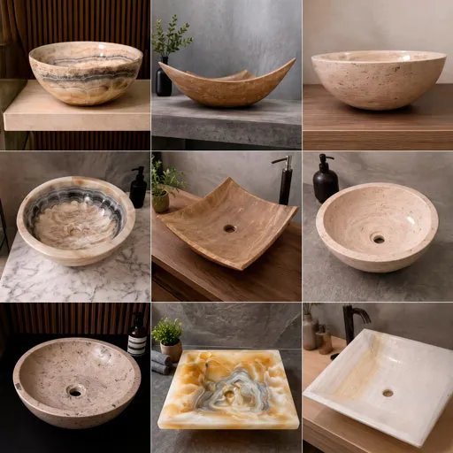
Ojivales de Mármol
Esta selecta colección de lavamanos de sobreponer es una obra de arte natural. Cada pieza de ojival es irrepetible, esculpida a mano en piedra natural con texturas y veteados orgánicos que desafían la repetición. Desde formas orgánicas y fluidas hasta líneas cuadradas minimalistas, estos lavabos transforman su baño en un santuario de lujo terrenal. Una inversión en elegancia atemporal que sirve como el punto culminante de su diseño de alta gama.

Porcelanato Pulido Bellagio Azul
Un statement de diseño para proyectos extraordinarios. Esta pieza magistral reinterpreta la profundidad del ónix natural, desplegando un oleaje visual en tonos azul glaciar, vetas perladas y delicados acentos arena. Su acabado pulido de alto brillo inunda los espacios de luz y sofisticación, siendo la elección estelar para baños de lujo, lobbys o muros de acento que buscan ser los protagonistas.

Porcelanato High Gloss Harlem
Lujo dramático y absoluto. Este imponente porcelanato captura la esencia del mármol negro exclusivo, donde vetas blancas y vibrantes destellos cobrizos estallan sobre un fondo profundo. Su acabado High Gloss (efecto espejo) multiplica la luz, haciéndolo ideal para espacios de vanguardia y muros de acento que exigen protagonismo.

Porcelanato Mate Mustagh Natural
Dinamismo orgánico y elegancia contemporánea. Este porcelanato reproduce el cautivador movimiento de un mármol exótico, fusionando fluidas vetas en gris acero con dramáticos acentos cobrizos. Su sofisticado acabado mate absorbe la luz para ofrecer una estética serena y vanguardista, ideal para interiores imponentes.

Porcelanato Madera Mónaco Amarillo
Calidez luminosa para interiores acogedores. Este porcelanato reproduce con extraordinaria fidelidad la belleza de la madera natural, destacando por su suave base en tonos arena y sus sutiles vetas orgánicas. Su diseño claro y limpio es la opción perfecta para aportar amplitud visual y un estilo nórdico o contemporáneo a cualquier espacio.

Porcelanato Pulido Grecia Blanco
Lujo atemporal y luminosidad absoluta. Este deslumbrante porcelanato captura la majestuosidad del mármol clásico, presentando un fondo blanco inmaculado surcado por elegantes y marcadas vetas en tonos gris carbón. Su acabado pulido de alto brillo expande visualmente cualquier espacio, convirtiéndolo en la elección perfecta para interiores sofisticados y minimalistas.

Porcelanato Madera Nice Ivory
Luminosidad y sutileza minimalista. Este elegante porcelanato captura la esencia de la madera clara, destacando por su suave paleta en tonos marfil y ceniza con una veta sumamente delicada. Su estética limpia y visualmente continua es la opción ideal para maximizar la luz natural y crear espacios serenos de inspiración nórdica.

Porcelanato Mate Alfa Gris Oscuro
Sobriedad y vanguardia arquitectónica. Este imponente porcelanato destaca por su profundo fondo en tonos gris acero y grafito, enriquecido con una sutil textura pétrea y cruzado por finas vetas blancas. Su sofisticado acabado mate absorbe la luz, creando atmósferas serenas, elegantes y de fuerte carácter industrial. Es la elección perfecta para espacios contemporáneos que buscan la fuerza visual de la piedra natural.

Porcelanato Piedra Arcadia Gris Medio
Amplitud visual y serenidad contemporánea. Este sofisticado porcelanato reproduce a la perfección la estética estriada del travertino gris, destacando por un armónico patrón de vetas horizontales en suaves tonos plata y ceniza. Su diseño lineal crea una sensación de continuidad que ensancha cualquier espacio, siendo la opción ideal para baños modernos, muros de acento y ambientes minimalistas.

Porcelanato Mate Apullia Beige
Calidez y suavidad envolvente. Este delicado porcelanato destaca por su base en tonos crema y sutiles matices durazno, suavemente surcada por finas vetas blancas. Su refinado acabado mate absorbe la luz para crear atmósferas serenas y acogedoras, perfecto para unificar áreas residenciales de descanso o proyectos comerciales y boutiques que buscan proyectar una elegancia relajada.

Porcelanato Mate Carrara Gold
Elegancia clásica con un toque cálido. Este sofisticado porcelanato reinterpreta el icónico diseño Carrara, fusionando un fondo blanco inmaculado con majestuosas vetas en tonos gris suave y vibrantes acentos dorados. Su refinado acabado mate ofrece una superficie serena y contemporánea, ideal para bañar de luz y un lujo sutil cualquier proyecto interior.
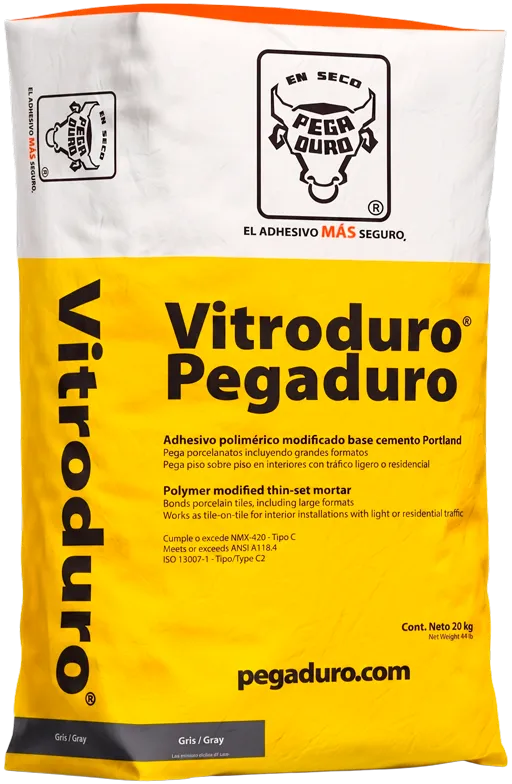
Vitroduro – Pegaduro
Adhesivo polimérico base cemento diseñado para lograr una alta adherencia química en porcelanatos de gran formato y piedras naturales con nula absorción de agua. Garantiza la máxima seguridad estructural al ofrecer el mayor tiempo abierto y superficie de contacto de su segmento. Ideal para recubrimientos de nula absorción y piso sobre piso en interiores con tráfico residencial.
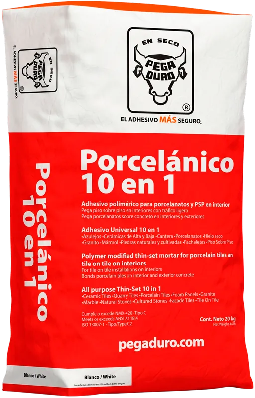
Porcelánico 10 en 1 – Pegaduro
Adhesivo polimérico modificado de máxima versatilidad, formulado para lograr una alta adherencia química al instalar porcelanatos y piedras naturales con nula absorción de agua. Destaca frente a otros adhesivos de su segmento al ofrecer mayor tiempo abierto y una superior superficie de contacto. Apto para interior y exterior sobre concreto y para colocar piso sobre piso en interior con tráfico ligero.
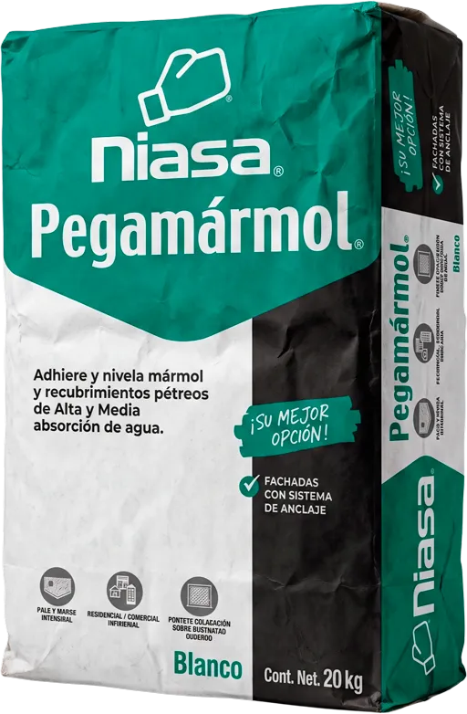
Pegamármol – Niasa
Mortero adhesivo de granulometría controlada y aditivos especiales, formulado para brindar alta adhesividad y excelente retención de agua. Su composición técnica garantiza una instalación segura, superando las resistencias físicas exigidas por la Norma ANSI 118.1. Diseñado para uso en interior, ideal en la colocación de parquet de mármol, recubrimientos pétreos y cerámica de media y alta absorción de agua.
Pegavitro – Niasa
Mortero adhesivo enriquecido con polímeros y aditivos especiales que garantizan una extraordinaria trabajabilidad y una gran adherencia química. Es el adhesivo para instalaciones de piso sobre piso más utilizado en México, ideal para evitar tiempos y costos de demolición. Su fórmula de alto rendimiento cumple y excede las exigencias físicas de las normas ANSI A118.1, ANSI A118.4 y NMX-C-420, brindando máxima seguridad estructural.
Fijaporcelánicos y Porcelanatos – Niasa
Mortero adhesivo con polímeros y aditivos especiales que brindan máxima adherencia química y trabajabilidad. Es la solución ideal para instalar porcelánicos (hasta 90x90 cm) y renovar con piso sobre piso en interiores residenciales sin demoliciones. Su formulación garantiza un anclaje seguro, excediendo las exigencias de las normas ANSI y NMX-C-420.
Boquichamp Ultrafino Porcelánico – Niasa
Contiene pigmentos aditivos y productos químicos seleccionados que otorgan adherencia y duración. Reforzado con tecnología de micro protección bacteriana que protege de olores y manchas causadas por bacterias, moho y hongos, además evita su crecimiento y reproducción. Mantiene una alta resistencia a la abrasión y se emplea para rellenar juntas de 1 a 3 mm, apto para interiores o exteriores en pisos y muros.
Sellador Barniz Universal
Tratamiento 100% acrílico base aceite para superficies de alta y media porosidad. Crea una película plástica de gran penetración que bloquea la humedad, rayos UV y agentes químicos, previniendo moho y salitre. Garantiza protección estructural con un "acabado mojado brillante" inalterable y libre de amarillamiento. Exclusivo para superficies porosas.
Sellador de Uso General
Tratamiento acrílico base solvente con resinas termoplásticas para proteger superficies de alta porosidad. Crea una película plástica de alta dureza y flexibilidad que bloquea humedad, químicos y rayos UV, previniendo moho y salitre. Reduce cuarteaduras y desprendimientos, ofreciendo un "acabado mojado brillante" que no sufre amarillamiento.
Sellador Silicón Repelente al Agua
Impregnador hidrofugante de extrema penetración (hasta 6 mm) a base de resinas 100% de silicón. Crea una barrera interna transpirable que bloquea la humedad, rayos UV y químicos, previniendo salitre y hongos. Brinda máxima protección estructural con un "acabado natural sin brillo" que preserva absolutamente intacta la apariencia original de la piedra. Exclusivo para sustratos minerales porosos.
Sellador de Superficies Porosas
Tratamiento acrílico base solvente formulado con resinas termoplásticas de gran penetración. Genera una película plástica ultra fina que protege la piedra contra la humedad, rayos UV y agentes químicos, previniendo hongos y bacterias. Ofrece un "acabado natural sin brillo" que no sufre amarillamiento, respetando íntegramente la textura y apariencia original del sustrato.
Balaustrados
Seguridad perimetral y monumentalidad clásica. Sistemas estructurales esculpidos en piedra natural de alta resistencia a la intemperie. Técnicamente indispensables para resolver desniveles, delimitar terrazas y proteger balcones con un soporte robusto. La solución definitiva para establecer un límite físico inquebrantable sin sacrificar la ventilación, la perspectiva visual ni la elegancia del proyecto.
Cornisas
Coronamiento estructural y protección pluvial. Remates esculpidos en piedra natural que definen la transición exacta entre el muro y la cubierta. Esenciales para desviar el agua de lluvia y evitar el deterioro continuo de las fachadas. Su volumen escalonado proyecta líneas de sombra que aportan una proporción horizontal perfecta, siendo el toque definitivo para dotar de jerarquía y monumentalidad a cualquier edificación de alto nivel.
Marcos
Definiendo el carácter arquitectónico con la calidez ancestral de la piedra. Estas piezas lineales esculpidas en cantera, con su textura porosa y tonalidad sutil contra la pared vibrante, abrazan con precisión cada abertura. No son meros contornos; actúan como portales que confinan la luz y la vista, mientras que su diseño mamposteado asegura y sella la transición estructural, elevando una ventana estándar a un elemento de diseño atemporal.
Molduras
Transición y refinamiento arquitectónico. Elementos lineales de piedra natural diseñados para seccionar grandes superficies, ocultar juntas constructivas y enmarcar cambios de recubrimiento. Su relieve rompe la planicidad de los muros mediante un rítmico juego de luz y sombra. El recurso técnico indispensable para aportar proporción, dirección y detalle excepcional a fachadas e interiores de alta gama.
Remates
Coronamiento visual y máxima jerarquía arquitectónica. Piezas escultóricas labradas en piedra natural, diseñadas para culminar fachadas, frontones y pórticos principales. Esenciales para sellar la cumbre estructural de un edificio y establecer su eje de simetría central. Su imponente presencia volumétrica es el recurso definitivo para proyectos de alto nivel que exigen una identidad icónica y un cierre estético verdaderamente magistral.
Columnas
Soporte monumental y verticalidad. Elementos de piedra natural labrados para sostener arcadas o revestir núcleos estructurales. Indispensables para dictar la escala y distribuir visualmente las cargas en fachadas. El recurso definitivo para dotar de solidez inquebrantable y máxima jerarquía a los accesos de proyectos de gran magnitud.
Piezas Especiales
Ingeniería artesanal a medida. Elementos estructurales y decorativos diseñados para resolver geometrías complejas donde la estandarización no aplica. Desde chimeneas de diseño hasta mobiliario fijo, fabricamos bajo especificaciones rigurosas para garantizar un ensamble perfecto y durabilidad. La solución técnica ideal para materializar proyectos exclusivos con manufactura impecable.
Fuentes
Punto focal paisajístico y confort acústico. Piezas escultóricas labradas en piedra natural diseñadas para articular espacios exteriores y patios centrales. Técnicamente esenciales para regular la micro-temperatura local mediante el flujo hídrico y proveer un ambiente sonoro relajante. El elemento monumental definitivo para dotar de dinamismo, frescura y una identidad de alto nivel a jardines y desarrollos residenciales.
Vírgenes
Arte sacro y devoción monumental. Esculturas labradas con alta precisión técnica en piedra natural, garantizando una resistencia absoluta a la intemperie. El elemento focal idóneo para presidir nichos arquitectónicos, capillas residenciales, patios centrales y altares exteriores. La obra artesanal definitiva para integrar solemnidad, durabilidad inalterable y una elegancia clásica a espacios de contemplación y proyectos de alto nivel.
Esculturas
Hito visual y expresión monumental. Obras de arte talladas a detalle en piedra natural, diseñadas para dominar la escala paisajística y arquitectónica. Su masividad estructural y resistencia inalterable a la intemperie las convierten en el ancla estética perfecta frente a cualquier clima. El recurso artístico definitivo para dotar de identidad, prestigio y un punto focal magnético a plazas, jardines residenciales, fuentes y accesos de alta gama.
¿Listo para iniciar tu proyecto?
Hablemos.
Te daremos el mejor precio directo de fábrica y opciones de envío a tu medida.
Ya sea que busques el material ideal para una fachada, necesites ayuda para calcular los metros cuadrados de tu espacio o quieras conocer nuestros tiempos de entrega, escríbenos.


Expertos en extracción, transformación y comercialización de piedras naturales en México desde hace más de 35 años.
Al ser un material 100% natural, cada pieza presenta variaciones únicas de tono, veta y textura, características que forman parte de su belleza y autenticidad.
-
 Arcomex Canteras Sucursal Ganaderos
Arcomex Canteras Sucursal GanaderosC. Ganaderos 293, Valle del Sur, Iztapalapa, 09819 Ciudad de México, CDMX
+52 55 9180 3308 -
Arcomex Canteras Querétaro
Carr. Querétaro, Central, San Luis, S.L.P, Km 16 4, Col. El Salitre, 76127 Santiago de Querétaro, Qro.
+52 442 251 6781 -
Arcomex Canteras Cedis
50394 La Presita Segundo Cuartel, Méx.
+52 558 854 6022
-
Corporativo Arcomex
C. Ganaderos 293, Valle del Sur, Iztapalapa, 09819 Ciudad de México, CDMX
-
+52 55 8854 6022
 Teléfono Principal
Teléfono Principal -
 Correo Electrónico
Correo Electrónicocontacto@arcomexcanteras.com.mx